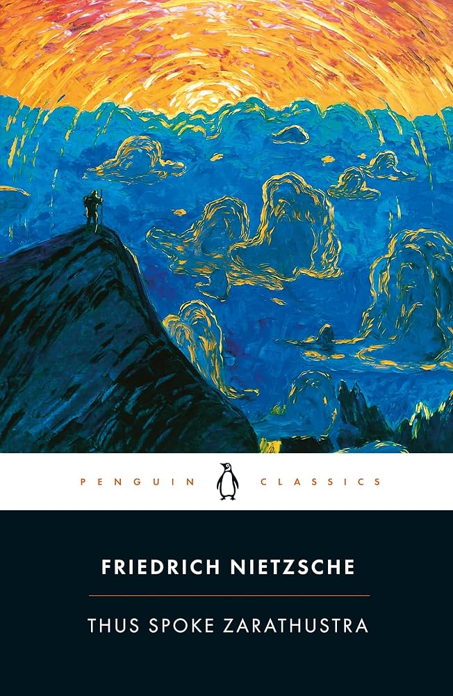
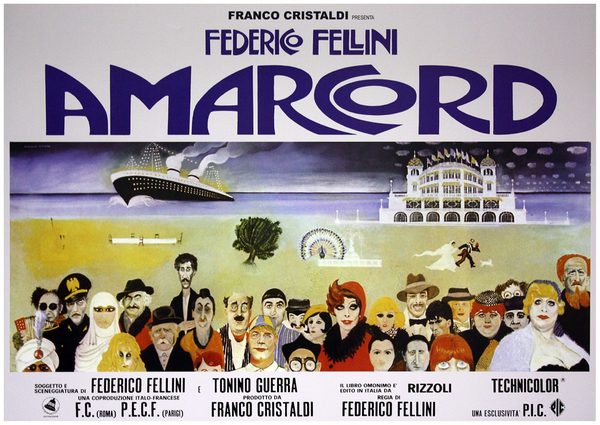

things of interest

Le Taureau: A series of eleven lithographs in which Picasso progressively abstracts a bull

Thus Spoke Zarathustra: The book where Nietzsche unveils his philosophy

Amarcord: The movie where director Federico Fellini recounts the Italy of his youth through a dream-like story telling
Totem and Taboo: The book where Freud draws parallels between the conditions of primal people and modern psychological conditions

Sirens: Music composed by Ludwig Göransson for Christopher Nolan's movie The Odyssey